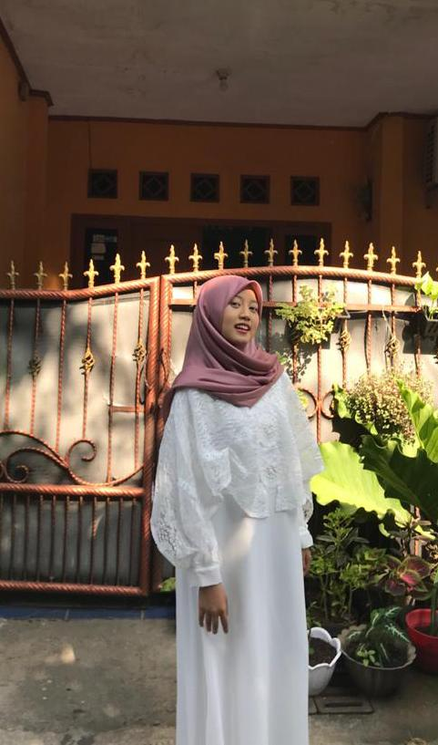

Hi Welcome to My Hut
Having around one year of experince as Quantity Surveyor in Civil Engineering Building Construction. I have solid background to perfoming construction project since the first step, such as commercial building, high rise building, as well as residental building and privatelanded house. Also i continued work as Estimator in Interior Design and bulid for about one year. I decided to change my life to be professional fullstack developer also i still continued my work as civil engineer for keeping my life balance.

Nurul Anisah
Quantity Surveyor/ Supervisor/ Fullstack Developer